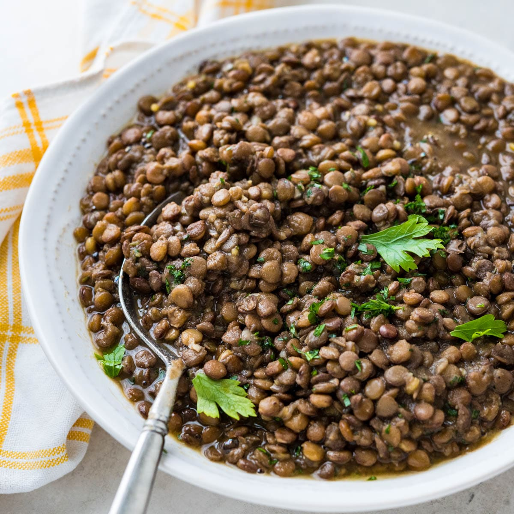

Lentils

Description
Cooked brown lentils make a quick and easy vegetarian main course or side
dish and this recipe is about as simple as it gets. Cooking lentils with a
handful of herbs and a few pantry staples makes a tasty, healthy lentil
side dish that feeds a crowd.
Ingredients
- Dried Brown Lentils
- Olive Oil
- Yellow Onion
- Fresh Thyme
- Bay Leaf
- Water
- Garlic
- Ketchup
Steps
-
Sort through the legumes and remove any pebbles or detritus and set
aside
-
In a large saute pan, heat the olive oil over medium heat and add the
chopped onions. Cook, stirring for 2-3 minutes, sweating the onions
until they're softened and slightly translucent
-
Stir in the lentils, vegetable broth, bundle of thyme, bay leaves and
water
-
Bring the mixture to a boil, then reduce the heat to a simmer and cook,
stirring occasionally for 25 to 30 minutes or until the brown lentils
are tender
Home